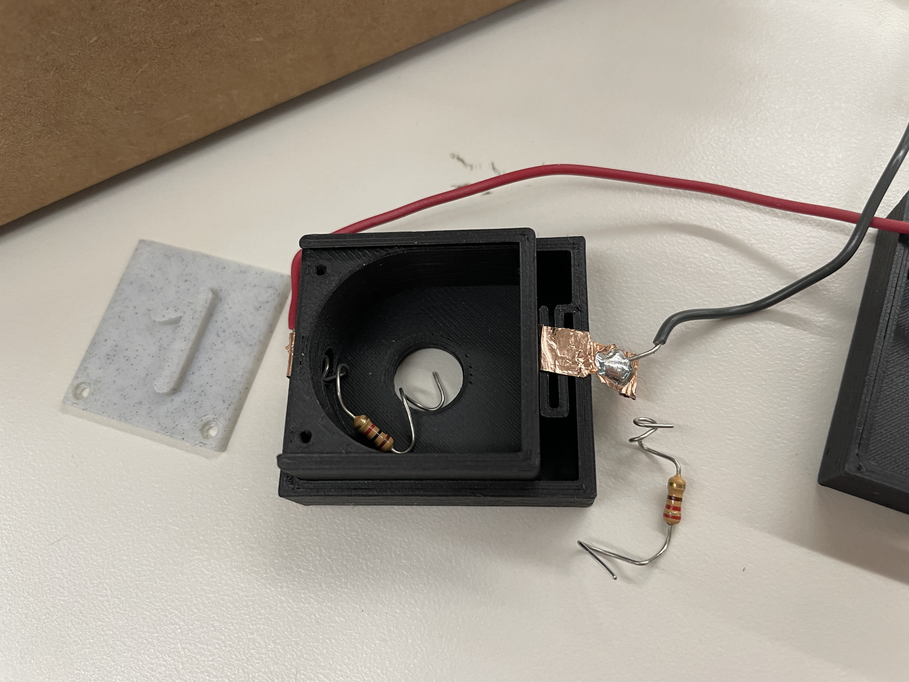
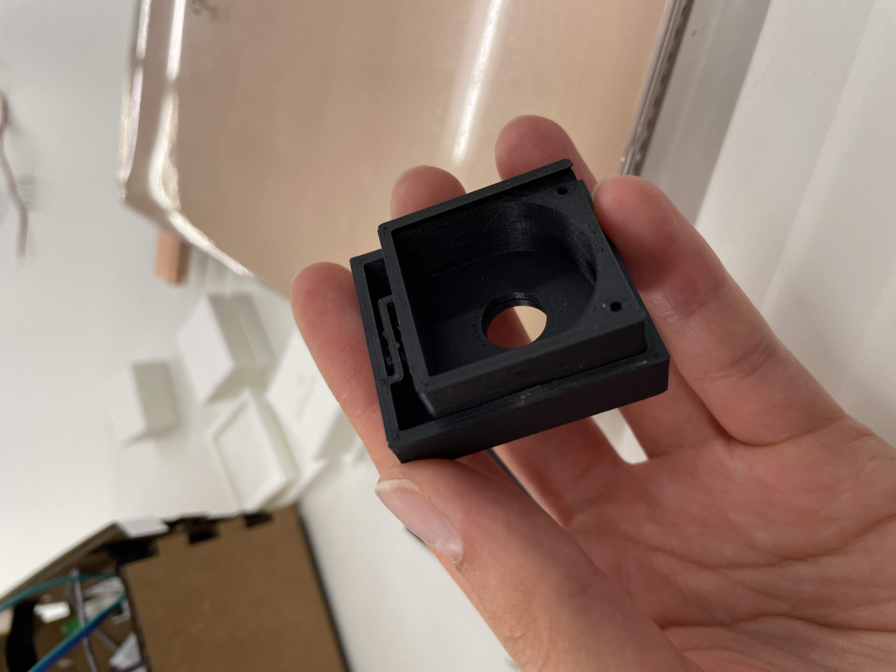
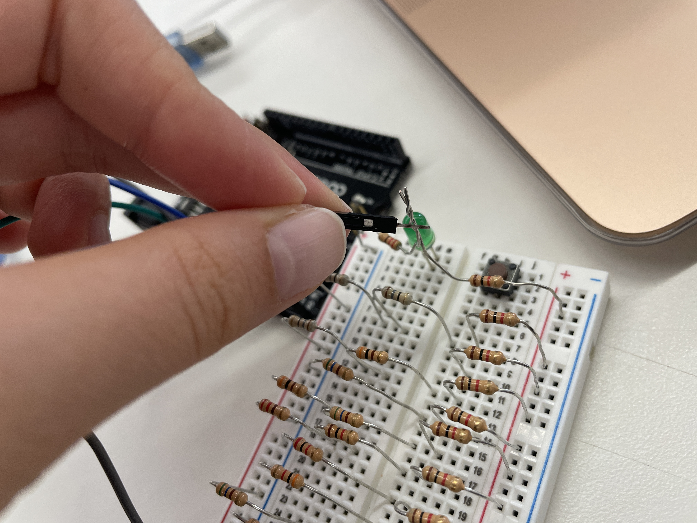
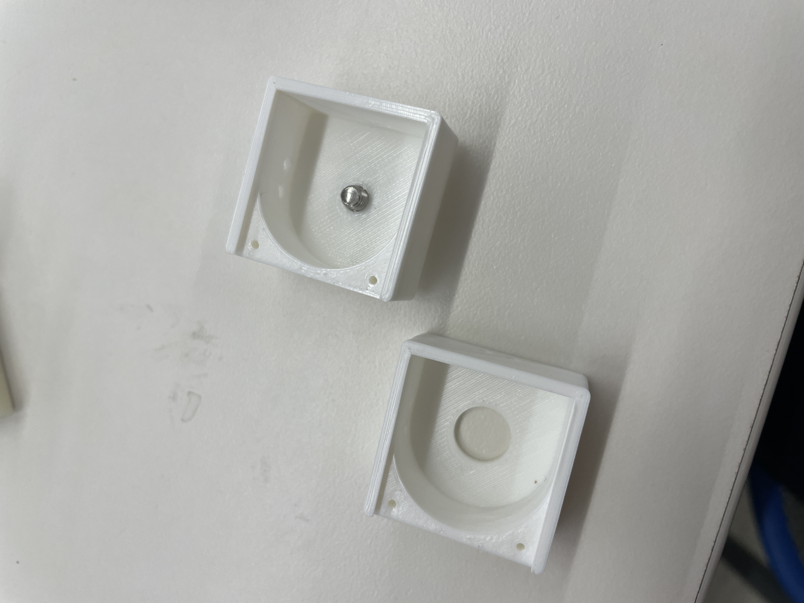
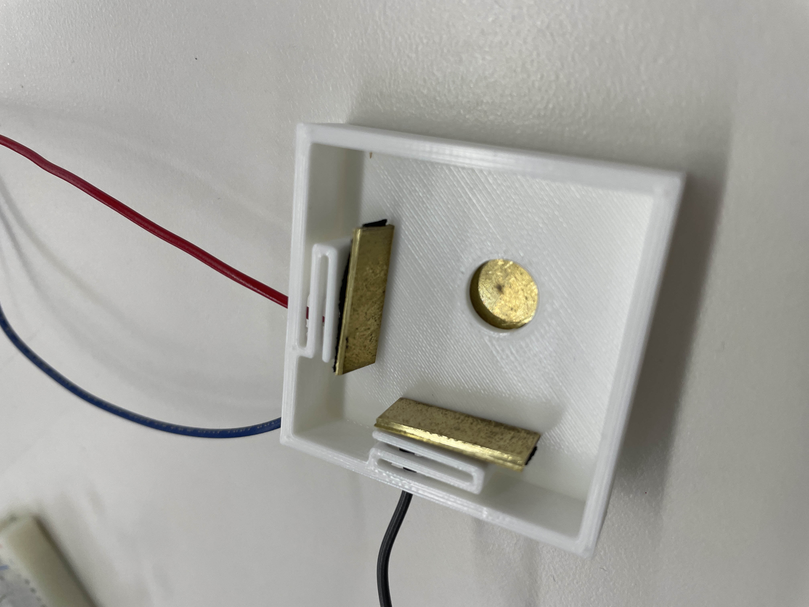
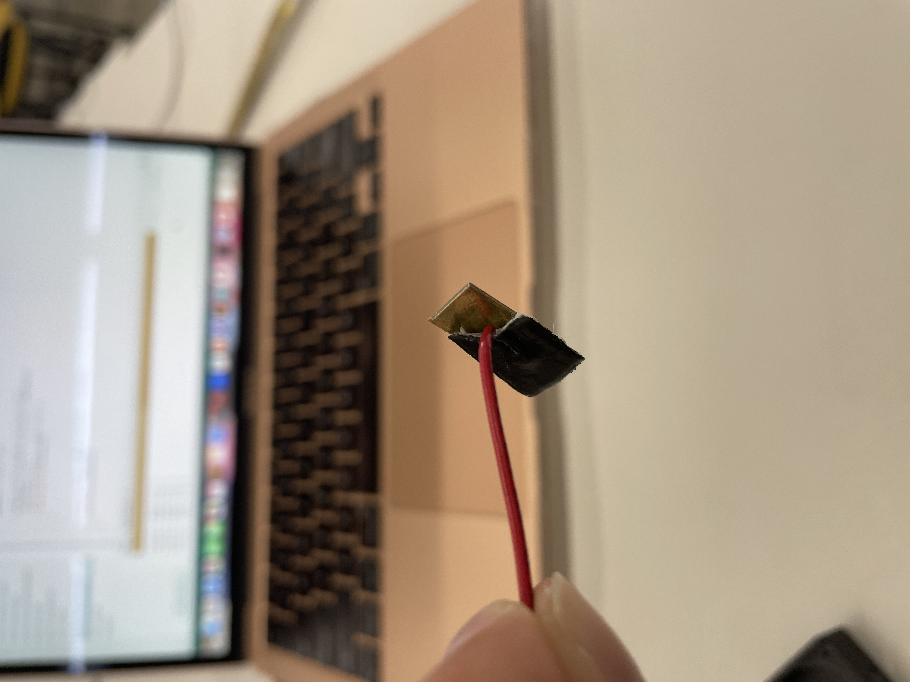
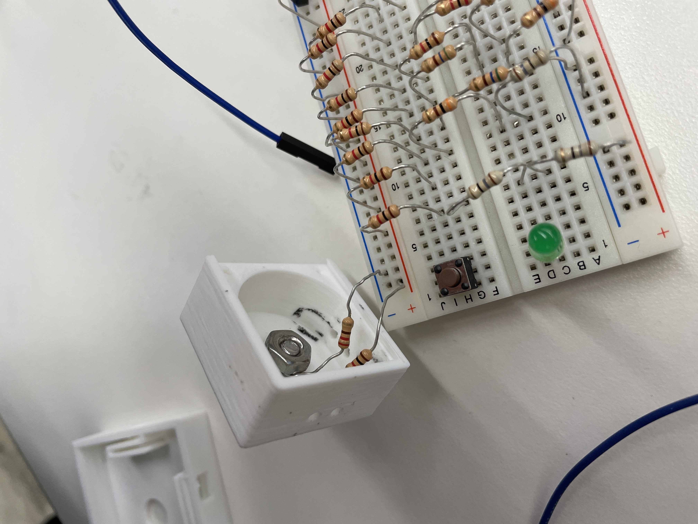
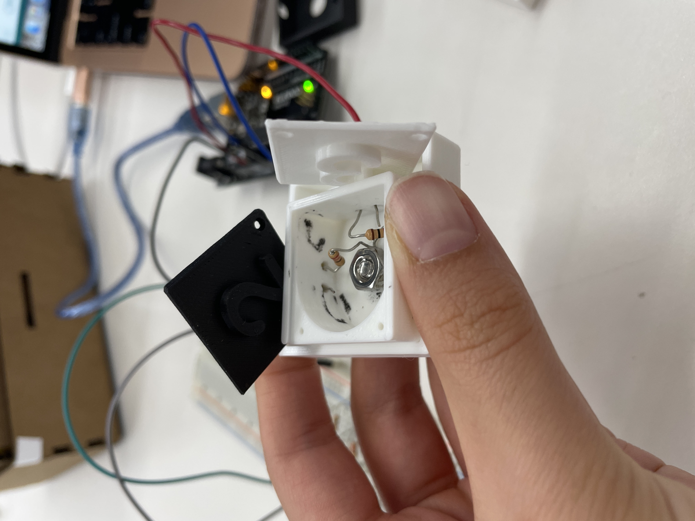
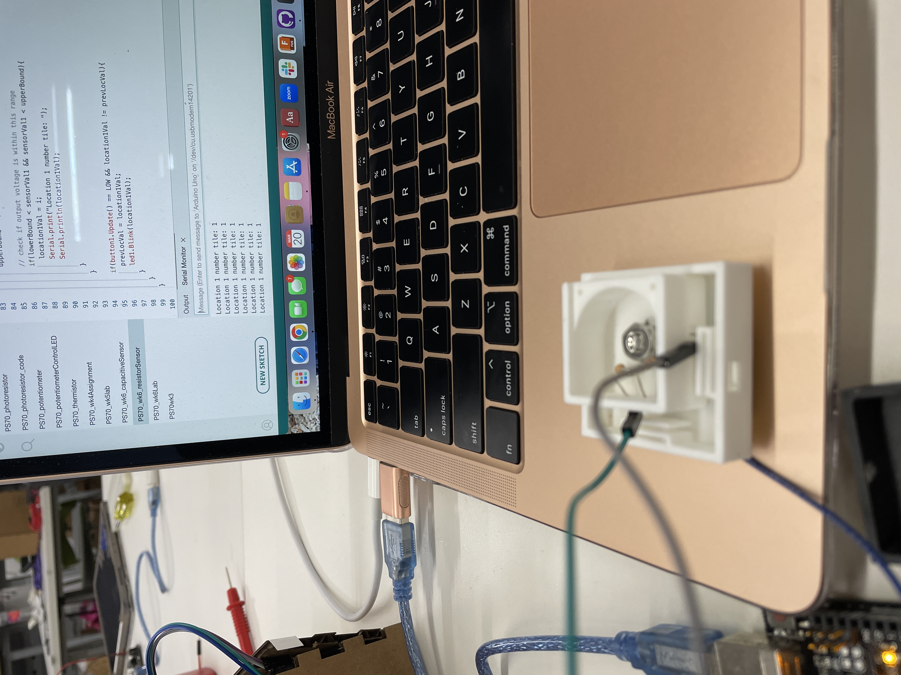

My goal for my MVP was to create an example of the outerboxes that would be connected to the microcontroller and that you would place each number tile in so that the game could identify which number was placed where. When deciding how to design my MVP tile spots, I came across this youtube video showing some 3D printed battery boxes that had a sort of 3D printed spring at one end. I then designed a surroudning box for the number tiles in Fusion based off of the boxes in this video but with holes on two sides and on the bottom of the box. I intended for the two holes on the side to be for wires conencting the number tile to 5V and GND and for the hole on the bottom to be connecting to the analog pin that will be reading the voltage divider resistance.
The holes on the outer box and inner number tile in the first iteration did not quite line up, but the 3D printed spring worked and the pieces fit together well! I reprinted the outer box so that all of the holes were aligned. I wasn't sure how exactly I wanted everything to connect inside of the number tiles, so I decided to test some things out with the breadboard and voltage divider that corresponded to the number 1 to see how sturdy the connections between parts needed to be for it to work. I used the code from last week and looked at the serial moniter which printed out the number that corresponded to the current voltage divider reading that the analog pin was connected to. My first test was to see if the analog pin would generate the correct reading if I just twisted the two resistors together outside of the breadboard and then connected them to 5V and GND with the breadboard and then touched the end of the analog pin wire to the twisted resistors. This test did work, so I decided to use this simple way of connecting the resistors together inside of the number tiles. I couldn't decide what kind of metal connector to use for the outer box; Nathan had suggested a spring, but I was having trouble creating a mental image in my head of how to put that together. I tried soldering some wires to small pieces of copper tape and tried putting the tape over the holes with the wire going through the holes to the outside of the outerbox, but the copper tape wouldn't stick very well, and Bobby also pointed out that the copper tape could easily get scratched/is a bit too flimsy. He suggested using some other type of thin metal sheets for this part of the project that would hold up a bit better. For the holes on the number tiles themselves, I tried winding some wire into spirals that would fit in the hole and touch whatever was on the outer surface of the tile, but this definitely did not seem like it would work well.

For my second full iteration, I changed the holes on the sides (not the bottom hole) of the number tile into two smaller holes that I could thread a wire through so that I would not have to add any flat metal pieces to the number tiles themselves. I changed the outer box so that there were two 3D printed springs placed on adjacent sides with holes in each of them. On both the number tile and the outer box, I moved the side holes onto adjacent sides rather than opposite sides. I didn't change the bottom hole at all because honestly I still had no idea how I wanted to do that connection between the voltage divider and the analog pin (apparently my brain can only do so much thinking per iteration). While these were printing, I used a hacksaw to break a little piece of metal off of an old coat hanger (I think?) and then tried to solder it to a wire, but the solder wouldn't stick to the metal piece, so Bobby said it would be okay if I just used tape (Nathan had originally suggested folding the metal into a spring, but Bobby pointed out that the metal piece I was using was not very elastic (not sure if that is the right term) so it might not work well as a spring). I then finally decided to start thinking about the bottom hole connection. I needed something that could be secured on both the inside and outside surfaces of the bottom of the tile, so I decided to try using a screw and a nut (size 8-32 X 1/4) with the screw on the outside surface touching whatever metal piece I used on the outerbox and the nut on the inside connecting to the voltage divider. I tried soldering the resistors to the nut which took me forever (because I am slow at soldering), and I now realize was very dumb because it got hot really fast and the soldering metal didn't really stick to the nut anyways. By then, my second iteration print was done and I started printing the number tile of my third iteration which had a smaller hole on the bottom surface that was sized to fit the thinner part of the screw (but be smaller than the head of the screw). While that was printing, I tested out my second iteration with the flat metal piece/wire placed on one of the 3d printed springs. It seemed like it would work but the fit was a bit too tight. So, for the outerbox of my third iteration, I made the size a bit bigger and made the bottom hole the size to fit the head of the screw.

While my third iteration was printing, I sawed off two more small pieces of flat metal for the other side and bottom hole connections and taped wires to these. I also used my voltage divider breadboard setup from last week to test out if all of the metal pieces and the nut/screw actually worked; they all did, although the connection definitely had to be secure for the Arduino to correctly identify the number of the voltage dividers. Once my print was done, I tried putting it all together--flat metal on the 3D spring surfaces and outside of outerbox bottom surface, each resister with one leg threaded through a side of the number tile, the other leg of the resistors twisted together and secured with the nut, and the screw on the bottom of the tile (I made sure the head of the screw I chose was thicker than the wall thickness of my outerbox so that it would ensure that the screw would be in contact with the bottom metal surface)--and of course it did not work :/ So I tried testing each connecting piece. I started by testing if the issue was the bottom screw not being well connected to the inside voltage divider. I took the side wall legs of the resistors out from the number tile walls and put them directly into my breadboard connected to 5V and GND and then manually tapped the screw with the analog pin. This gave the correct output (a bunch of number 1's), so I decided to test the side hole connections. These were definitely an issue because when I increased the size of the outerbox, I made it a bit too large and should have added more length to the 3D printed springs, so the connection was loose (thus me using the tile lids to push the metal pieces up against the tile in the photo below). I still wanted to also test the bottom surface connection, so I stuck the 5V and GND wires directly onto the resistor loops on the sides of the number tile and then placed the tile into the outerbox to see if the screw to metal connection was an issue. The Arduino was outputting all 1's, so this was okay yay!

I had already spent the majority of my day in the lab and did not have time to print out a fourth iteration and resize the outer box, so the final version of my MVP was very M... I ended up using some pliers to fold the two side pieces of metal so that they could hang over the sides of the outer box and better fit the number tile. I then used some more tape (not gonna lie I have always loved using tape to make things (not even kidding it is literally in my college app essays) so yay for running out of time so I could use tape) to secure the folded metal to the outer box. Doesn't look super pretty but it works (most of the time haha). Nathan warned me about the difficulty of making the connections between pieces, so maybe I should have started making these parts earlier, but I am happy that it has the sometimes ability to work even though my actual final project will (hopefully) look a bit different (hopefully better but who knows).